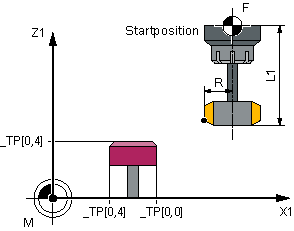

Die Funktion "Zähne einzeln prüfen" kann für das Nachmessen (Korrektur in den Verschleiß) und das erstmalige Vermessen (Korrektur in die Geometrie) verwendet werden. Es können Fräswerkzeuge mit bis zu 100 Schneiden vermessen werden.
Es wird geprüft, ob die Messwerte aller Schneiden innerhalb eines definierten Toleranzbereiches liegen:
Obergrenze: Vertrauensbereich TSA und Maßdifferenzkontrolle DIF
Untergrenze: Nullkorrekturbereich TZL
Liegen die Messwerte außerhalb des Toleranzbereiches, wird ein Alarm ausgegeben.
Liegt der Messwert der längsten Schneide innerhalb des Toleranzbereiches, wird dieser in die Werkzeugverwaltung eingetragen. Bei Unterschreitung der Untergrenze wird nicht korrigiert.
| Hinweis |
|
Die Funktion "Zähne einzeln prüfen" ist nur möglich im Zusammenhang mit der Funktion Werkzeugmessung mit drehender Spindel. |
Das Werkzeug wird seitlich vom Messtaster und unterhalb der Messtasteroberkante in der Versetzachse positioniert. Für die Ermittlung der Spindelposition einer Schneide wird der Messtaster zweimal mit rotierendem Werkzeug angetastet.
Anschließend erfolgt die Längenmessung mit stehender Spindel. Dazu wird das Werkzeug über dem Messtaster und um den Werkzeugradius versetzt zur Messtastermitte positioniert.
Zuerst wird die Schneide vermessen, deren Spindelposition durch das seitliche Antasten ermittelt wurde. Die weiteren Schneiden werden durch Spindelorientierung vermessen.
Nach den Messungen wird der Messwert der längsten Schneide in die Werkzeugkorrektur eingetragen, vorausgesetzt dieser liegt im Toleranzbereich.
Für die Radiusmessung muss die Schneideneinteilung den gleichen Abstand haben (Beispiel: ein 3 Schneider hat jeweils im Abstand von 120 Grad eine Schneide).
Das Werkzeug wird seitlich vom Messtaster und unterhalb der Messtasteroberkante in der Versetzachse positioniert. Für die Ermittlung der Spindelposition der längsten Schneide wird der Messtaster zweimal mit rotierendem Werkzeug angetastet.
Anschließend erfolgt durch Mehrfachantastung mit stehender Spindel die Messung der genauen Spindelposition und des Schneidenradius am höchsten Punkt der Schneide.
Die anderen Schneiden werden durch Ändern der Spindelorientierung vermessen. Der gemessene Radius der längsten Schneide wird in die Werkzeugkorrektur eingetragen, vorausgesetzt der Wert liegt im Toleranzbereich.
Es gelten folgende zusätzliche Voraussetzungen:
Die Schneidenanzahl des Fräswerkzeugs muss in der Werkzeugkorrektur eingetragen sein.
Werkzeugspindel mit Lagemesssystem.
Der Werkzeugmesstaster muss kalibriert sein, siehe Abgleich Messtaster (CYCLE971)
Vor Zyklusaufruf muss das Werkzeug seitlich neben dem Messtaster und oberhalb der Messtasterkante positioniert werden.
"Zähne einzeln prüfen" (CYCLE971), Startposition vor Messzyklenaufruf